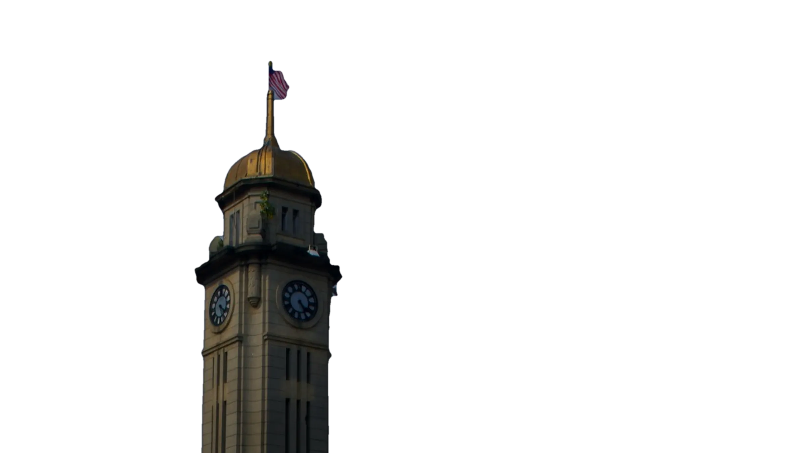
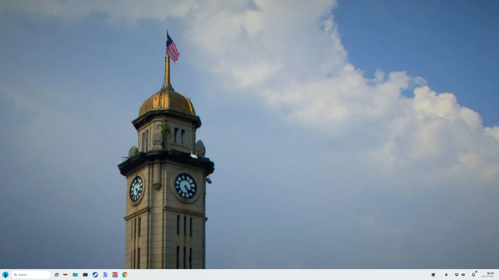

File anda
Copy from Windows dari app “Welcome”, dapat balik file dari Desktop, Documents, Pictures, Music dan Videos dan bookmark Edge dan Chrome dan itu dan sekian.

Kenalkan, keluaran besar pertama
Arch Linux yang sedia untuk semua. Install tak payah internet. Rasa macam Windows. Kerja, main game, layan AI sendiri, semua satu tempat. Senang je.
Nama dia
Setiap keluaran KrissOS ambik nama satu tempat di Malaysia. Yang pertama, nama kampung sendiri: Sungai Petani, Kedah, dengan menara jam tengah pekan tu.
Desktop



Wallpaper
Pindah
Tabiat lama anda, tetap sama di sini. Rupa dia kami punya: lembut, bulat dan tenang, dengan satu warna Sky Cyan.

Copy from Windows dari app “Welcome”, dapat balik file dari Desktop, Documents, Pictures, Music dan Videos dan bookmark Edge dan Chrome dan itu dan sekian.
Log masuk ke Steam, main game Windows macam biasa, melalui Proton (bukan kereta). Ada Xbox Game Pass? Cuba Xodus Nexus (masih eksperimen). Tak pasti? Semak dalam game checker dulu.
Kebanyakan app dah ada versi Linux, atau boleh guna dalam browser ja. Yang tak boleh tu, WinBoat jalankan app Windows dalam tetingkap sendiri. Settle.
Internet yang perlu untuk install. Semua dah ada dalam USB.
Repo bertandatangan atas Arch. Kecik, dua orang pun boleh jaga.
Bahasa dari hari pertama: English dan Bahasa Melayu.
Janji yang kami pegang setiap keluaran.
Satu PC
Pergi kerja naik Kriss, masuk opis guna KrissOS, waktu gaming pun guna KrissOS. Sampaikan vibe coding pun guna KrissOS. Tak payah nak dual boot dah.
Desktop yang tenang, semua benda dah ada. Kalau update buat hal pun, restart, pilih snapshot lama. Simple.
Steam dah siap set, dengan driver yang betul dengan spesifikasi peranti anda (cewah). Laptop lama pun kami lenjan. Tune power macam Tuneboss.
Nak main local AI? Kriss boleh check AI model apa yang ngam dengan GPU anda, tinggal setting-setting sikit, terus pakai.
Janji
Lima perkara yang KrissOS pegang untuk setiap keluaran. Takdak syarat tersembunyi, tak banyak bunyi.
kriss rollback. Tool kami pun ada revert.Dalam ni ada
Yang lain semua mai terus dari Arch. Kami bawa yang kami punya ja.
Taskbar, launcher yang anda taip, notifikasi, quick settings dan skrin kunci. Ni la desktop default kami.
Cuba dulu, install kemudian. Build baru keluar tiap-tiap malam, tapi lepas lulus test boot kami ja.
Muncul masa first boot: game checker, app biasa anda, Copy from Windows, driver dan extra lain.
Steam, GameMode, Gamescope dan MangoHud, satu install terus siap. Tukar mod power pun satu klik ja.
WinBoat jalankan app Windows dalam tetingkap sendiri. kriss winapps check PC anda dulu, baru set semua.
Ollama dari app welcome, ikut GPU anda, siap check model mana yang ngam. Nak coding agent sekali? Satu langkah ja.
kriss-vm bagi VM Windows pinjam GPU anda (untuk desktop). Dia check hardware dulu, dan boleh undo semua dengan satu command.
kriss migrateDah pakai Arch atau CachyOS? Satu command ja tukar terus jadi KrissOS, file dan app semua kekal.
Install sebelah Windows, setiap snapshot ada dalam menu boot. Tengah test lagi.
Kernel kami sendiri, tune untuk CPU baru, build depan-depan semua orang. PC lama pun ada build standard.
Geng Mac? Nanti ada layout pilihan: bar atas, dock tengah, butang tetingkap sebelah kiri. Rupa tetap KrissOS.
Nanti boleh jalan dengan Secure Boot on, dan kekal signed lepas setiap update.
Cuba
Boot live USB atau VM. Takkan ada apa-apa yang ter-install selagi anda tak setuju.